- Guide Yuuki
- Time 10:42–16:30
- Group Brian and Dashiell
- Start and end Tokyo Station → your hotel
Depart Shizuoka Station
Hikari 640, ordinary car 13, seats 1D and 1E. About an hour to Tokyo.Arrive Tokyo Station
I’ll be waiting on the platform, right at the door closest to your seats. Message me on WhatsApp if anything changes.
FLAT LABO, Ginza
A showroom for museum-quality digital art printing: the craftsmanship and technology behind fine art prints, plus a live printing demonstration up close. 2-16-7 Ginza, Shochiku Building, Chuo-ku · 03-6264-7718. About an hour, with me interpreting.
Frames at K.Itoya
If you want to see frames for the print before lunch, K.Itoya’s frame corner is a 6-minute walk from FLAT LABO — about 1,500 frame samples and 500 mat samples, B1 floor. Google Maps ↗ RengateiGinza · western food since 1895The Ginza restaurant that invented the pork cutlet and the rice omelette — Japan’s own take on Western food, not the diner version you know.Open in Google Maps ↗
RengateiGinza · western food since 1895The Ginza restaurant that invented the pork cutlet and the rice omelette — Japan’s own take on Western food, not the diner version you know.Open in Google Maps ↗ Ginza TenkuniGinza · tempura since 1885Tendon, a tempura rice bowl fried to order, in a shop that has been doing exactly this since the Meiji era.Open in Google Maps ↗
Ginza TenkuniGinza · tempura since 1885Tendon, a tempura rice bowl fried to order, in a shop that has been doing exactly this since the Meiji era.Open in Google Maps ↗ Tsukiji YamachoTsukiji · tamagoyaki since 1949A thick, sweet-savory rolled omelette grilled fresh and handed over on a stick — street food, not scrambled eggs.Open in Google Maps ↗
Tsukiji YamachoTsukiji · tamagoyaki since 1949A thick, sweet-savory rolled omelette grilled fresh and handed over on a stick — street food, not scrambled eggs.Open in Google Maps ↗ Tsukiji Unagi ShokudoTsukiji · eelFreshwater eel, grilled over charcoal and glazed, served on rice — richer and smokier than anything called “eel” back home.Open in Google Maps ↗
Tsukiji Unagi ShokudoTsukiji · eelFreshwater eel, grilled over charcoal and glazed, served on rice — richer and smokier than anything called “eel” back home.Open in Google Maps ↗ Uni LABO MarushuTsukiji · sea urchinA bowl piled high with uni over rice — more of it, and fresher, than sea urchin ever gets served in the US.Open in Google Maps ↗
Uni LABO MarushuTsukiji · sea urchinA bowl piled high with uni over rice — more of it, and fresher, than sea urchin ever gets served in the US.Open in Google Maps ↗Kappabashi Kitchenware Street
A shopping street for professional-grade kitchen tools and restaurant supplies — Japanese knives, ceramics, and the realistic food replicas restaurants use. Popular with chefs and food enthusiasts alike.
Yanesen
Yanaka, Nezu and Sendagi: quiet lanes of old wooden houses, local shops and artisan boutiques, and Yanaka Ginza, lively with street food and small eateries. A glimpse of old Tokyo.
Arrive Sunshine City Prince Hotel
I’ll help with check-in, and that’s where the guided day ends. The suitcase sent ahead from Shizuoka will be waiting for you. Evening free, dinner on your own.
Tokyo Station → Ginza about 15 minutes by train, one IC card tap. Ginza → Kappabashi about 40 minutes by train. Kappabashi → Yanesen about 20 minutes by train. Yanesen → Sunshine City Prince Hotel about 30 minutes by train. Open the route in Google Maps ↗
- FLAT LABO additional workJPY 65,780 (tax included)Paid on site by credit card via a payment link. Data preparation fee JPY 20,000 × 2, UV layered printing fee JPY 9,900 × 2.
- Lunch and dinnerOn your own
- Same-day luggage deliveryOptional, paid on siteWorth it if you’re carrying a lot.
- Local transportYour own IC card
Good for Kappabashi and Yanesen are both made for browsing and street food — bring an appetite and a little cash for small shops.
Keep in mind Tokyo is still warm in September, so bring water and comfortable walking shoes. Please send FLAT LABO your image files ahead of time for the live printing demonstration.
More: an Akihabara anime day
Not part of Friday. A separate day, only if it interests you — a private half-day anime tour around Akihabara, Tokyo’s anime and electronics district.
- Built around whatever series you're into, not a fixed script
- The real streets a favorite scene was drawn from
- Floors for retro games, figures and doujin, with the culture explained along the way
- Secondhand shops for figures and games, where I can also tell you if a price is fair
- A route we work out together once I know what you love
For Dashiell: To Your Eternity, Ruri Rocks, The Girl From the Other Side and Frieren share a certain feel — quiet, strange, beautifully drawn, more about the world than the fight. Akihabara has secondhand shops trading in old manga, art books and cel art, worth a look for series like these. And since Ruri Rocks is about minerals, Tokyo Science, a fossil and mineral specimen shop on the 1st floor of Kinokuniya’s Shinjuku main store — ammonites, trilobites, mineral clusters, open daily — is worth a stop if that appeals.
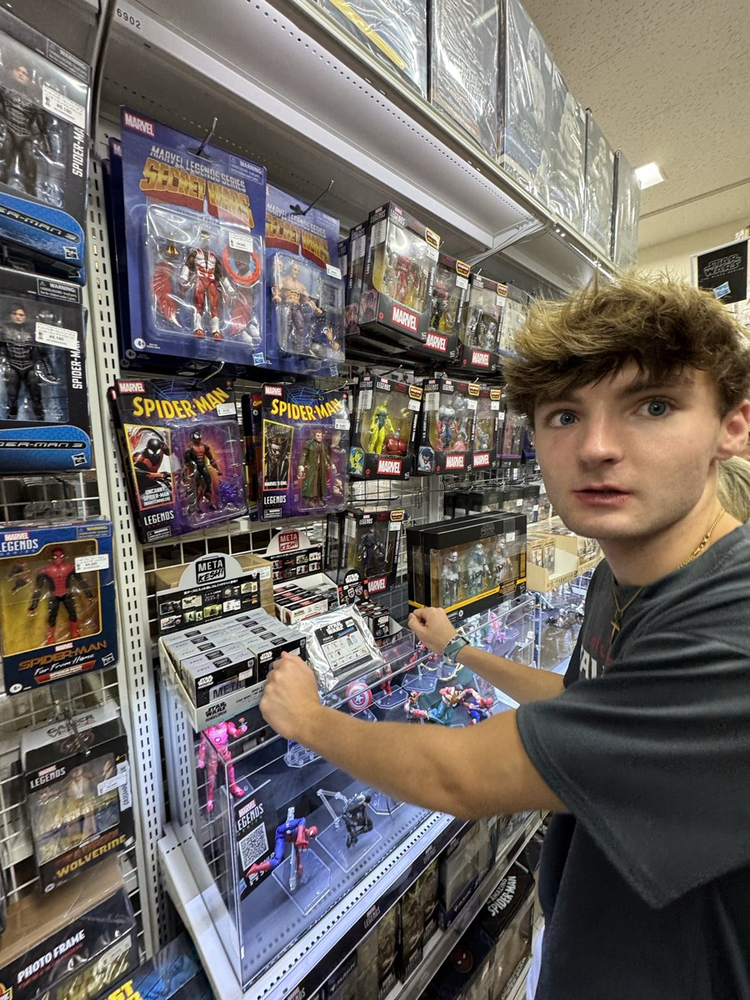
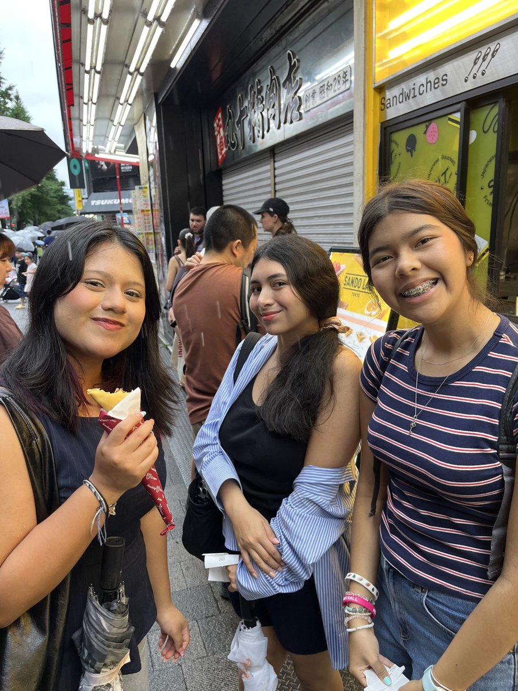
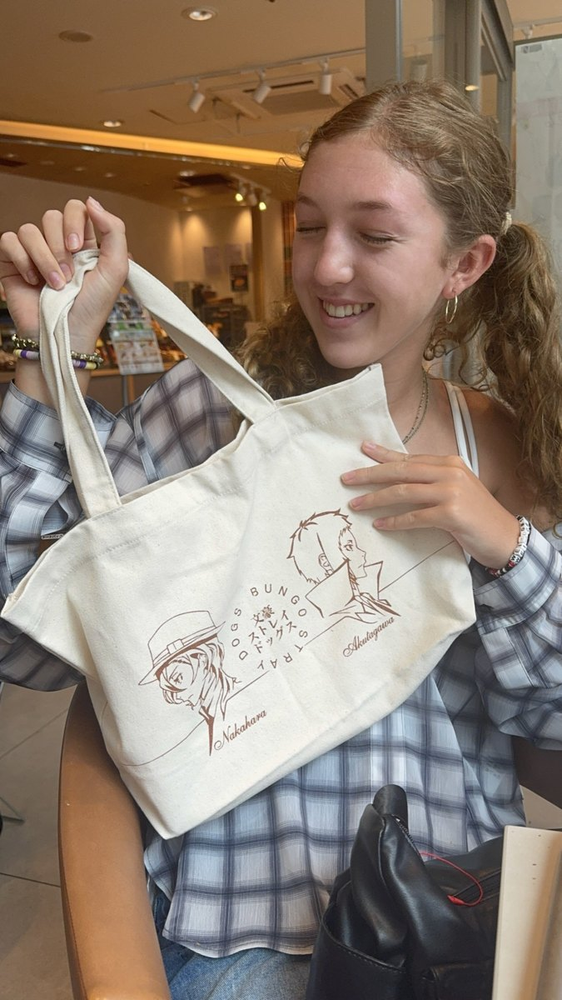
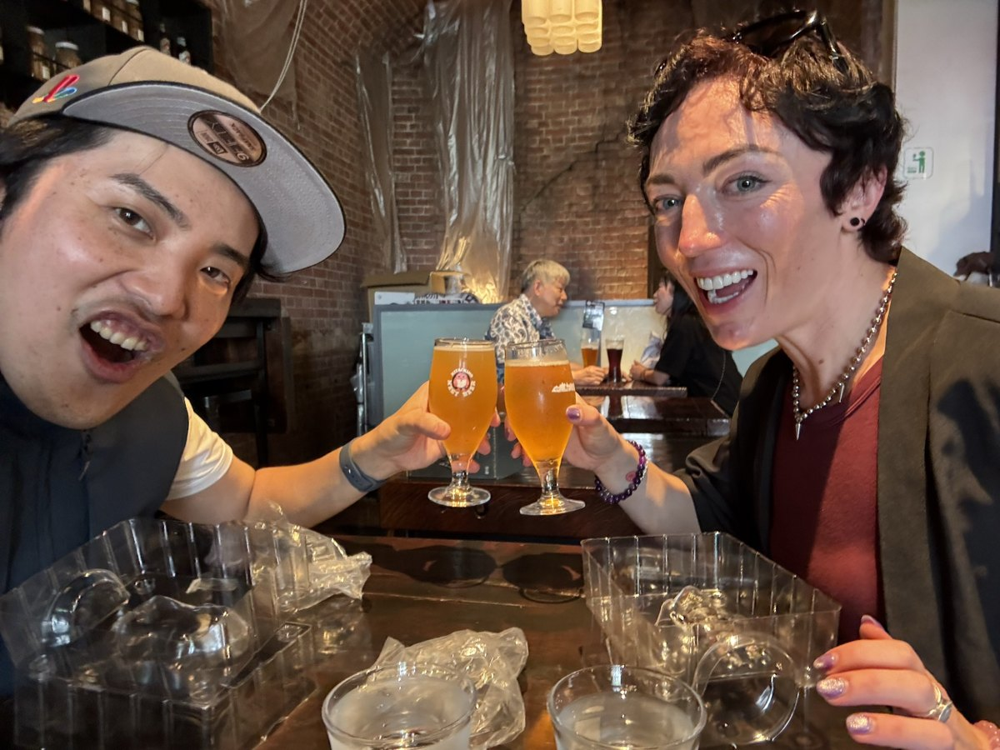
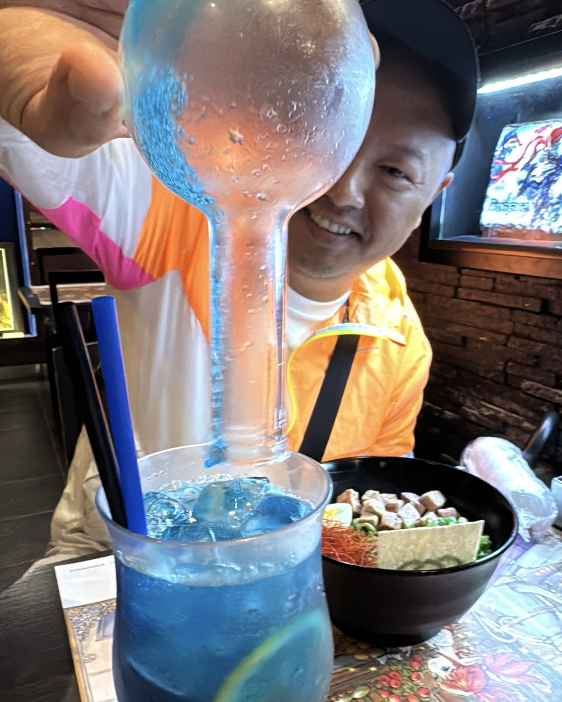
More of these days on Instagram.
Akihabara anime tour guide | 2,000+ guests
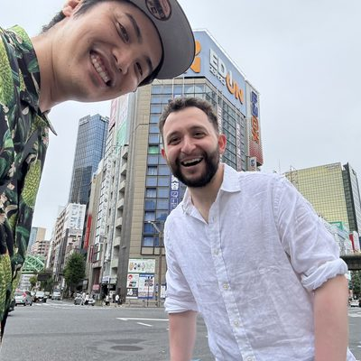
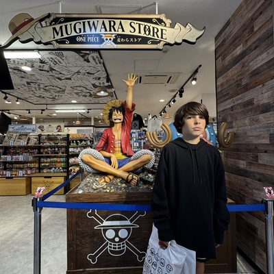
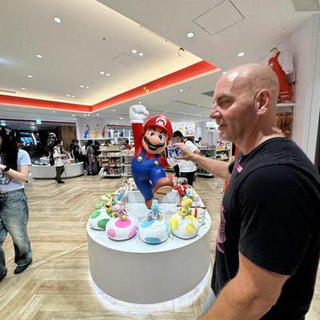
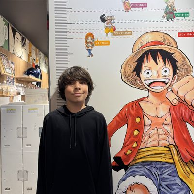
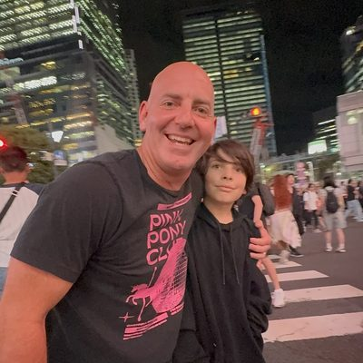
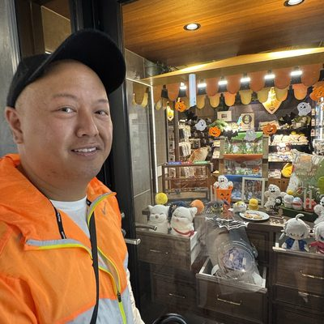
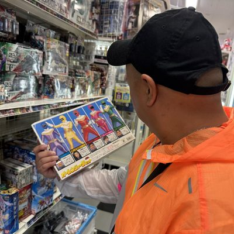
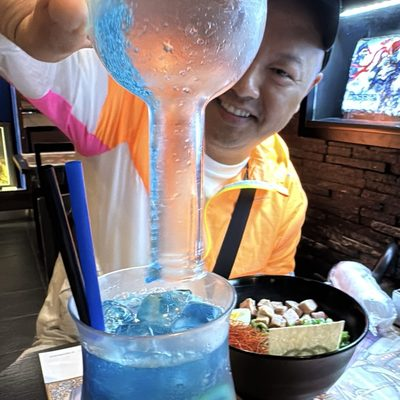
Interested, or just curious? Yuuki Ichihara, +81 (0)90-4494-1989, WhatsApp works too — same guide, same number as Friday.